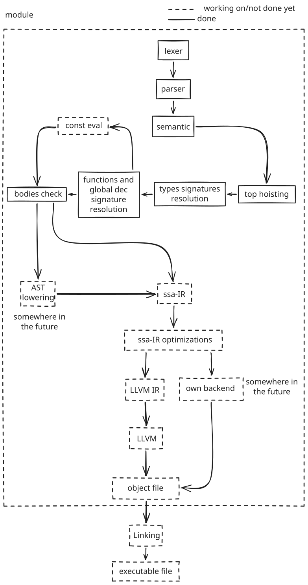

Introduction
This book is the main documentation for the Orn programming language.
Note
For bugs or missings in this book please report an issue in the Github repo
Warning
Orn is currently being designed and developed, so it can be that some of the syntax in this book it is not implemented yet, but it is intended to be.
What is Orn?
Orn is a systems-oriented language that aims for developers coming from high-level languages such as TypeScript but also low-level devs that are tired of the boilerplate and unreadable code.
Orn brings familiar syntax with low-level capabilities like manual memory management, pointers and strong static types while keeping a soft learning curve and a good developer experience.
Release
Orn is still being designed and implemented. This documentation works as a declaration of what it is intended to be for v1.0.
For a roadmap after v1.0, see the Roadmap section.
How does Orn look like?
struct Node {
val: int;
next: *Node;
}
enum Option {
Some(int),
None,
}
impl Node {
fn create(val: int) -> Node {
ret Node { val: val, next: null };
}
fn find(head: *Node, target: int) -> Option {
while head {
if head.val == target {
ret ::Some(head.val);
}
head = head.next;
}
ret ::None;
}
}
fn main() -> int {
let a = Node::create(10);
let b = Node::create(20);
let c = Node::create(30);
a.next = &b;
b.next = &c;
let result = Node::find(&a, 20);
match (result) {
Some(val) => { ret val; }
None => { ret -1; }
}
}
This example is consist of linked list implementation along with a function to find a value in the list.
Conventions throughout the book
thoughout the book, you’ll find many syntax explanations and code snippets. The syntax explanations are BNF-like rules following this notation:
x y : sequence
x | y : alternative
x? : optional
x* : zero or more
x+ : one or more
"x" : literal token
UPPER : token from lexer
(x y) : grouping
e.g:
if_stmt = IF expr stmt (ELIF expr stmt)* (ELSE stmt)?
This means that an if_stmt consists of an TK_IF followed by an expr and a
stmt, followed by zero or more groups of TK_ELIF expr stmt, and optionally
an else statement that would be the group TK_ELSE stmt.
Contributing
There are many ways to contribute to Orn, from reporting bugs and suggesting what you’d like to have implemented, to writing code and documentation. All contributions are welcome.
You can know more about how to contribute at Contributing to Orn
Syntax
Program structure
Top-level code
Orn does not require a main function. Code can be written at the top level
and it will execute from top to bottom:
let x = 10;
let y = 20;
let sum = x + y;
Using a
mainfunction is recommended for clarity, but not required.
Top hoisting
Top-level signatures (functions, structs, enums, type aliases, global variables) are hoisted, so they can be used before they appear in the file. Top-level statements execute in order.
let p = Point::origin(); // works, Point is declared below
struct Point { x: int; y: int; }
impl Point {
fn origin() -> Point {
ret Point { x: 0, y: 0 };
}
}
This means that the order of signatures does not matter, but the order of statements does.
For more information about the semantics of Orn, see Semantic analysis.
Types
Every value in Orn has a type that is known at compile time.
Syntax
Types follow this grammar: (See Introduction for the notation)
type = STAR type
| LBRACKET type SEMI NUMBER RBRACKET
| LPAREN type_list COMMA? RPAREN
| base_type
base_type = INT | UINT | FLOAT | DOUBLE
| BOOL | VOID | CHAR | STRING
| ID
Primitives
int : Signed integer
unsigned : Unsigned integer
float : Single precision floating point
double : Double precision floating point
bool : Boolean
char : Character
string : String
void : No value
void is used for functions that do not return a value (omitting the return
type works too). It cannot be used for variables or parameters.
Pointers
A pointer is the address of a value in memory. A pointer type is written as *
followed by the type it points to.
Pointer operators:
There are two pointer operators:
*T: *T -> T: Dereferences a pointer of type*Tto get the value at the address.&T: &T -> *T: Gets the address of a value of typeTto create a pointer.
Examples:
let x: int = 42;
let p: *int = &x; // p points to x, it is an address e.g. 0xABABABAB
let y: int = *p; // y is now 42
Arrays
An array is a fixed size collection of elements of the same type. The size has to be known at compile time.
let arr: [int; 5] = [1, 2, 3, 4, 5];
want a dynamic array? See Common Data Structures.
Arrays and assignment behavior
Assigng an array to a variable, the variable contains the pointer to the first element of the array. Slicing creates an indepentent copy of the array.
let a: [int; 3] = [1, 2, 3];
// A)
let foo = a;
// B)
let foo = a[0:3];
-
A)
foobecomes a pointer to the first element ofa. Modifyingfoomodifiesa. What means that it is the same aslet foo = &a[0]. Pass by reference. -
B)
fooby slicing at the index of the array, it enforces the creation of a new array with the sliced elements. Modifyingfoodoes not modifya. Pass by value.
This means that let foo = a[0:n] is a way to duplicate a whole known size
array.
Tuples
A tuple groups multiple types together in a fixed order.
let point: (int, string) = (10, "hello");
Tuple fields can be accesed by two ways:
- Destructuring:
let (x, y) = point; - Indexing:
point.0andpoint.1
Tuples work as parameters and return types as well.
Structs
A struct is a custom type that has named fields.
struct Point {
x: int;
y: int;
}
let p: Point = Point { x: 10, y: 20 };
/* or (to avoid redundancy) */
let p = Point { x: 10, y: 20 };
Omitting the type annotation when the right side is a struct initializer is good practice to avoid noise and keep the code clean.
Enums
An enum is a type with fixed set of members. Each member can carry data (tagged unions) or have explicit integer values.
enum Color {
Red = 1,
Green,
Blue,
RGB(int, int, int)
}
There are multiple ways to access enum members:
let c: Color = Color::Red; // full declaration
let c: Color = ::Red; // object inferred from static type
let c = Color::Red; // type inferred from right side
There is this exception where the object can be ‘omited’, these cases are when a function returns an object or we are matching on an enum:
fn get_color() -> Color {
ret ::Red; // the object is inferred from the return type
}
match color {
::Red => { ... } // the object is inferred from the matched value
::Green => { ... }
_ => { ... }
}
More about enums behavior in statements.
Impl
Not actually a type, but worth mentioning it here.
Both structs and enums can have functions along with them using impl blocks.
This functions are static and accessed with the :: operator.
struct Point {
x: int;
y: int;
}
impl Point {
fn origin() -> Point {
ret Point { x: 0, y: 0 };
}
fn translate(p: *Point, dx: int, dy: int) {
p.x += dx;
p.y += dy;
}
}
let p = Point::origin();
Point::translate(&p, 5, 10);
Type aliases
A type alias adds alternative names for exiting types. The alias and the original are interchangeable; type aliases are a compile time feature, not a new type.
type_dec = TYPE ID EQ type SEMI
type Byte = unsigned;
type Pair = (int, int);
let p: Pair = (10, 20);
Casting
Casting is done with the as operator:
let x: int = 65;
let ch: char = x as char; // 'A'
let f: float = x as float; // 65.0
Where types appear
Types appears in several parts of the code and they are a fundamental part of the language. They are used at:
- Variable declarations:
let x: int = 42; - Constants:
const PI: double = 3.14159; - Function parameters and return types:
fn add(a: int, b: int) -> int {...} - Struct fields:
struct Point { x: int; y: int; }(Struct is a type itself) - Enum declarations:
enum Color { Red, Green, Blue }(Enum is a type itself) - Type aliases:
type Byte = unsigned; - Casts:
let ch: char = x as char; - sizeof operator:
let size = sizeof(int);
When a let declaration does not specify a type, it adopts the type from the right side of the assignment. This is a type of inference that allows to omit many redundant type annotations.
Keywords
Orn has some reserved keywords that they cannot be used as identifiers or outside of their proper contexts. These are:
intunsigneddoublefloatboolvoidcharstringifelseelifwhileretbreakcontinuestructenumimporttruefalseletconstfnsizeofsyscallforinmatchdeferimpltypeasnull
Identifiers
IDENTIFIER = [a-zA-Z_] [a-zA-Z0-9_]*
Identifiers that are are valid:
foo_foofoo123foo_barFOO
Identifiers that start with an underscore are usually used for intentionally unused variables, for example:
fn foo() {
let _unused = 42;
}
This won’t trigger unused variable warning.
Literals
NUMBER = DECIMAL | HEX_LITERAL | OCT_LITERAL | BIN_LITERAL
DECIMAL = [0-9]+ ("." [0-9]+)?
HEX_LITERAL = "0" ("x" | "X") [0-9a-fA-F]+
OCT_LITERAL = "0" ("o" | "O") [0-7]+
BIN_LITERAL = "0" ("b" | "B") [01]+
STRING_LITERAL = "\"" (escape | [^"\\])* "\""
CHAR_LITERAL = "'" (escape | [^'\\]) "'"
escape = "\\" [nrt0\\'"x] | "\\x" [0-9a-fA-F]{2}
bool_literals = TRUE | FALSE
Number literals:
423.140x2A0o520b101010
Hex, octal and binary becomes decimal numbers at compile time at the parser.
String literals:
"Hello, world!""Line 1\nLine 2"
Character literals:
'a''\n'
Bool literals:
truefalse
Operators and Punctuation
Punctuation
Punctuation tokens are used as operators, separators, and delimiters.
PUNCTUATION = "..."
| "+="
| "-="
| "*="
| "/="
| "%="
| "=="
| "!="
| "<="
| ">="
| "<<"
| ">>"
| "&&"
| "||"
| "->"
| "<-"
| "=>"
| "::"
| ".."
| "++"
| "--"
| "+"
| "-"
| "*"
| "/"
| "%"
| "!"
| "~"
| "&"
| "|"
| "^"
| "="
| "<"
| ">"
| "."
| ","
| ":"
| ";"
| "?"
| "_"
| "("
| ")"
| "{"
| "}"
| "["
| "]"
Multi character tokens are matched longest first.
Delimiters
Bracket punctuation must always appear in matched pairs. The three types are:
| Bracket | Name |
|---|---|
{ } | braces |
[ ] | brackets |
( ) | parentheses |
An unmatched delimiter is a compile error.
Semantic Pass
What does the semantic pass do?
The semantic pass analyzes the AST (Abstract Syntax Tree) generated by the parser; it checks for semantic errors (type checking, scope resolution and variable shadowing, …) at compile time and resolves the symbols for the nodes in the AST.
Orn currently has four main phases in the semantic pass:
This code will help to ilustrate each phase:
type Num = int;
const MAX: Num = 100;
struct Point {
x: Num;
y: Num;
}
fn dist(p: Point) -> int {
ret p.x + p.y;
}
fn main() -> int {
let p = Point { x: 3, y: 4 };
ret dist(p);
}
All phases work with the information that the previous phases collected.
Top hoisting
Global scope signatures symbols are collected first, therefore making the declaration order at the global scope irrelevant. It only looks for signatures due to that an object member or function params can be type of another object, and that object can be not collected yet.
What this phase sees is:
type Num
const MAX
struct Point
fn dist
fn main
Type resolution
At the type resolution phase, the aliases and the objects symbols (structs and enums) are resolved. Each object symbol gets their members symbols resolved and so does the type alias symbol. Any unknown type at this point means that it has not been declared, as we had collected all the signatures at the previous phase.
What this phase sees is:
type Num = int;
struct Point {
x: Num;
y: Num;
}
Function signature and top level declaration resolution
You’ll be asking why is function signature resolution a different phase than
the type resolution? Functions can be members of objects thanks to impl blocks
and these functions needs to be appended to the object’s members, but the object
needs to be resolved first.
Consts and global scope variables are also resolved at the third phase, this declarations depend on the types that have to be previously resolved.
What this phase sees is:
const MAX: Num = 100;
fn dist(p: Point) -> int
fn main() -> int
Bodies check
Now that all the information that we could need is gathered, we can dive into the bodies and check; types, mutability, returns, name space access, etc. all of this is done at this phase.
What this phase sees is:
fn dist(p: Point) -> int {
ret p.x + p.y;
}
fn main() -> int {
let p = Point { x: 3, y: 4 };
ret dist(p);
}
Compiler Architecture

Roadmap
The roadmap for Orn is what is expected to keep developing after v1.0. It’s not a strict plan as the development of Orn is still in early stages, but it gives a well scoped idea of how it is the view for Orn.
Match and if expressions
If and match statements become valid expressions:
let x = if cond {...} else {...}
let msg = match (result) {
Ok(n) => { format(n) }
Err(e) => { log(e); "error" }
_ => { "unknown" }
};
Not like ternaries, these expressions allow for logic inside them.
null safety
Optional types to prevent null pointer dereferences. Not like Rust safety, here pointers can be null, but the code guides the programmer to handle nullability.
let p: ?*int = get_ptr();
// gotta check if p is null before deref
Methods and self keyword
The self keyword is a great way to make the code more readable this allows
enums and structs to have methods different from static functions:
struct Point {
x: int;
y: int;
}
impl Point {
fn translate(*self, dx: int, dy: int) {
self.x += dx;
self.y += dy;
}
}
let p = Point { x: 10, y: 20 };
p.translate(5, 10);
Generics and traits
trait Printable {
fn print(*self) -> void;
}
fn show<T: Printable>(x: T) {
x.print();
}
struct Point {
x: int;
y: int;
}
impl Point : Printable {
fn print(*self) -> void {
// ...
}
}
let p = Point { x: 10, y: 20 };
show(p);
traits are a way to set contracts for Generics, instead of being just “anything” they are “anything that implements this trait”.
Decorators and preprocessor
@inline
fn foo //...
@pre(x >= 0)
@post(ret >= 0)
fn foo(x: int) -> int {
x * 2
}
This decorators are just ideas of what it could be; for @pre would make x
range different for the scope as the range after @pre(x > 0) would change from
[-INT_MAX, INT_MAX] to [0, INT_MAX] which fits inside unsigned without data
loss, and making the compiler know that.
other decorators ideas are:
@deprecated- throw a warning when used.@debug- execute an additional code when –debug flag is set.@use- instead of the trait being in theimpl, this goes above a impl, following the previous example:
@use(Printable)
impl Point {
fn print(*self) -> void {
// ...
}
}
Closures and lambdas
Anonymous functions that can be assigned to variables, be a type or passed as arguments:
let add = (a: int, b: int) -> int { a + b };
NEEDSWORK
This section collects work to do at the documentation to avoid having to add noise to the documentation. But also, as a brief overview about what to do in the project, and how to contribute.
Documentation help
- Improve the lexical structure section.
- Improve the formal syntax of the language.
- Improve the syntax highlighting in the code snippets.
- Add a semantic analysis section to explain how the semantic analysis phases works.
- Add a section for common data structures.
- Add statements sections to explain the behavior of statements like
if,match,for, etc. - Roadmap section.
I want to contribute! But not documentation…
Dont worry! Documentation is very important, but we all know that it can be a bit boring.
It’s great that you want to contribute! If you are interested in contributing to the code, you can check Contributing there is everything well explained about how to contribute.